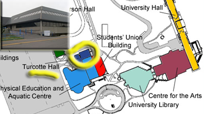

Welcome to my professional Home Page. I am Associate Professor and Chair in the Department of English at the University of Lethbridge, where I am responsible for teaching most of our
courses on medieval literature, the History of the Book, and the English language. I
also share responsibility for our first year introductory course, English 1900, and
a second year poetry class, English 2100. You can find out more about my teaching below.
Welcome to my professional Home Page. I am Associate Professor and Chair in the Department of English at the University of Lethbridge, where I am responsible for teaching most of our
courses on medieval literature, the History of the Book, and the English language. I
also share responsibility for our first year introductory course, English 1900, and
a second year poetry class, English 2100. You can find out more about my teaching below.
 My main
research interests include Old English language and literature, the history of the
book, editorial and textual scholarship, humanities computing, and
reception-oriented criticism. A copy of my CV
is available here. You can find out more about my
research below.
My main
research interests include Old English language and literature, the history of the
book, editorial and textual scholarship, humanities computing, and
reception-oriented criticism. A copy of my CV
is available here. You can find out more about my
research below.
I often direct senior undergraduate essays or M.A. or M.Sc. courses and theses in my
areas of research interest. I am always willing to consider taking on good new
students. If you are interested in pursuing a senior level or graduate programme
with me, please arrange an appointment to discuss your
plans.
As a researcher, I write books, articles, and lectures on various topics, mostly
having to do with medieval language and literature, the history of the book, textual
scholarship, and humanities computing. My most recent major publication is Cædmon’s Hymn: A multimedia study,
edition, and archive (D.S. Brewer and Medieval Academy of America,
2005). You can find a complete list of my publications and lectures in my
CV
.
 I am also associated with two international research projects: The
Digital Medievalist Project and The Visionary Cross/Digital Rood Project.
The Digital Medievalist
Project is an international Community of Practice dedicated to the
development and dissemination of best practice in the use of digital media by
medievalists. It operates an on-line scholarly journal, mailing list, Wiki, and
resource centre. The Visionary
Cross/Digital Rood Project is a research project that will ultimately
produce an electronic edition of the "Visionary Cross" trope in Anglo-Saxon England.
I am a co-director of this project with Dr. Martin Foys of Hood College Maryland,
and Professor Catherine Karkov of Miami University, Ohio.
I am also associated with two international research projects: The
Digital Medievalist Project and The Visionary Cross/Digital Rood Project.
The Digital Medievalist
Project is an international Community of Practice dedicated to the
development and dissemination of best practice in the use of digital media by
medievalists. It operates an on-line scholarly journal, mailing list, Wiki, and
resource centre. The Visionary
Cross/Digital Rood Project is a research project that will ultimately
produce an electronic edition of the "Visionary Cross" trope in Anglo-Saxon England.
I am a co-director of this project with Dr. Martin Foys of Hood College Maryland,
and Professor Catherine Karkov of Miami University, Ohio.
Office hours for students in my English 3450 course are Mondays and
Thursdays from 10:30-11:30 or by appointment.
As department chair I also hold general drop-in office hours from
10:00-10:30 every weekday. Students who cannot make these times
are encourage to contact me for appointment.
Office: Room TH 336a, Turcotte Hall.

Mailing address:
Department of English,
University of
Lethbridge
4401 University Dr. W.
Lethbridge AB T1K 3M4
CANADA
Voice: +1 (403) 329-2378 (department office)
Fax: +1 (403) 382-7191
E-mail:
daniel.odonnell@uleth.ca.